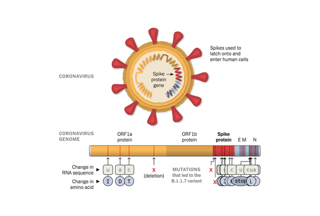

关于新冠病毒变种 目前我们知道些什么
英国科学家发现了一种被称为B.1.1.7的新冠病毒变种，引起世界一片哗然。《科学》杂志刊文称，变种病毒传播能力要比原始毒株高70%左右，而伦敦最近新冠感染病例超过60%都来自变种病毒。
它是新型超级病毒吗？ 不是，这只是随着新冠病毒在世界范围内传播而出现的众多变种之一。 《科学》杂志称，病毒复制时会产生突变，研究人员观察B.1.1.7变种病毒的基因组时，被它已经出现17个位点的大量突变震惊。通常，新冠病毒以每月1~2个突变的速度积累突变，这意味着，现在测定的许多病毒基因组与1月测定的最早的病毒基因组相差大约20个位点，但B.1.1.7变种病毒几乎同时出现大量位点突变，病毒进化之快，前所未见。
它比其他病毒更具传染力吗？ 据英国广播公司（BBC）报道，B.1.1.7变种病毒最早在9月被发现，到了11月，伦敦大约有四分之一的新冠感染病例与该变种病毒有关，12月中旬，这一数字已接近三分之二。
它会导致更严重的疾病吗？ 《纽约时报》称，目前没有足够证据表明B.1.1.7变种病毒会导致更严重的疾病，但科学家认为这个可能性并没有排除。 在南非，另一个谱系的新冠病毒出现了一种特殊突变，该突变也存在于B.1.1.7变种病毒中。在南非发现的变种病毒正在当地沿海地区迅速传播，医生发现，感染这种病毒的人携带的病毒量更高，这也导致更严重的症状。 非洲疾病控制和预防中心主任约翰·恩肯加松说，有证据表明，在南非发现的病毒变异株可能正在引发年轻人和其他年龄健康人群的严重疾病，“这现象令人担忧，但我们确实需要更多数据来确认”。